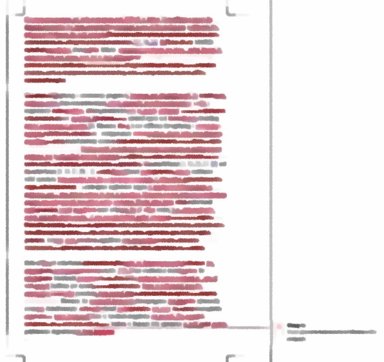
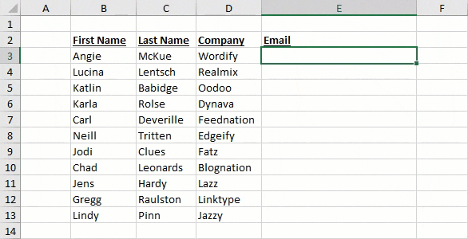
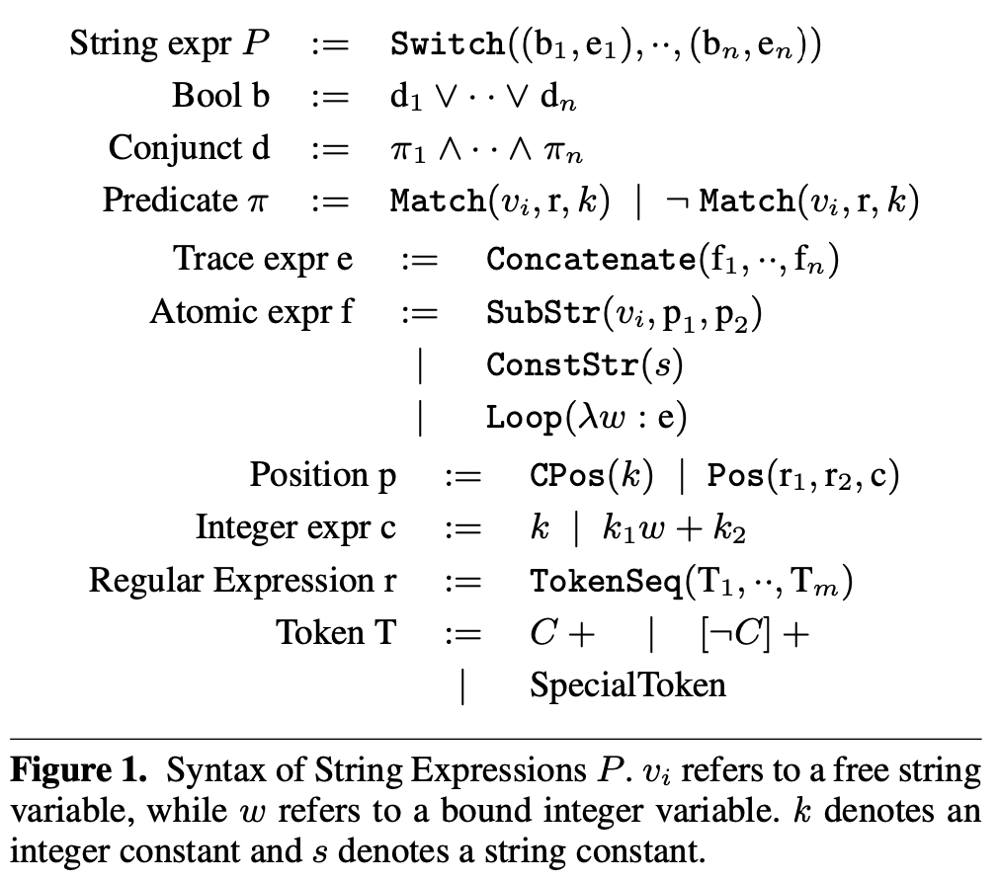
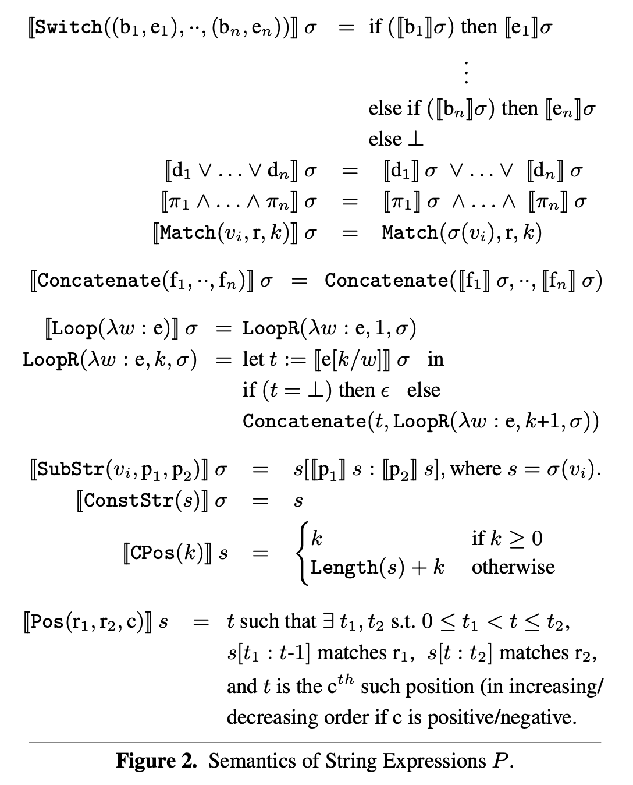
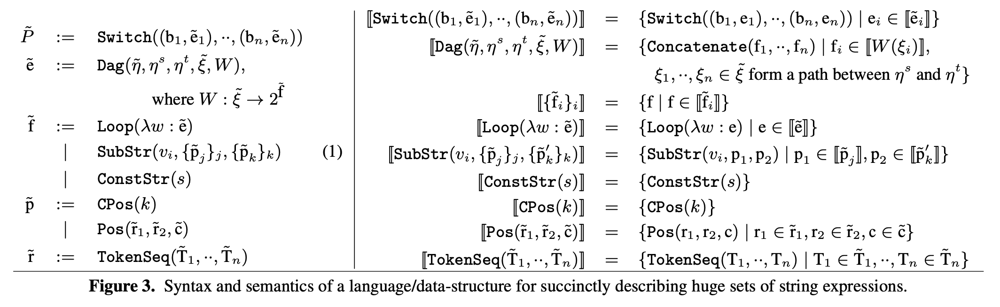
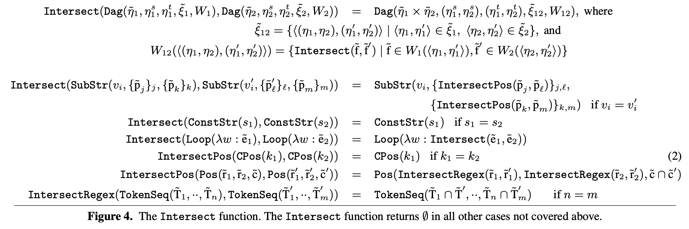
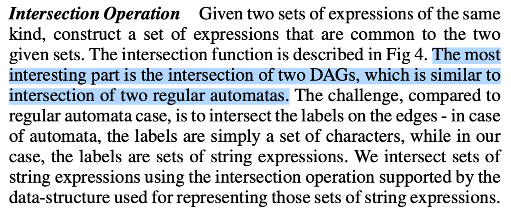
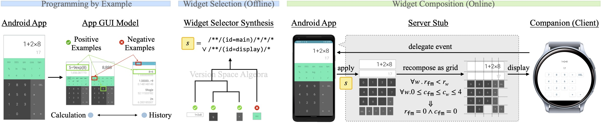

Yanyan Jiang
Check our homepage for assignments
Introduction to software engineering research
How to read
Raise the bar.
“Research” is serious and hard
What is Software?
What is Software's Engineering?
Tries to answer the fundamental question of how to build a piece of software
Make 码农 an easier life
Ultimate goal: take over human's role in software development
See ICSE's call for papers
“Empirical and human study”
“Technologies”
For fun and profits
Reading, Writing, and Hacking
(This is today's topic)
Be

SUGGESTIONS
Coding should mean nothing to you (just some implementation work)
Reading (presentation sessions, 30%)
Writing (research proposal, 30%)
Hacking (programming assignments, 40%)
Personal experience: almost all of my ideas emerged from reading textbooks and papers.
Gonna some big ideas?
A piece of work that teaches the research community a lesson. (Hope everyone remembers this!)
All papers form a citation graph
A LOT!
S. Keshav. How to read a paper, ACM SIGCOMM Computer Communication Review, 3(37), 2007.
Three-pass approach
Just like back-propagation in training neural networks.
New problem
Old problem, new solution
Finally
Only read papers related to my topic
This paper is limited in XXXX. It's a piece of junk!
I cannot hold!
Sumit Gulwani. Automating string processing in spreadsheets using input-output examples (POPL'11, Most Influential Test-of-Time Paper Award in 2021)
1st pass: the problem is to find a program $P$ that generalizes existing “examples” (and 90% students stop here)



 
(Unix is user-friendly; it's just choosy about who its friends are.)

What's this?
Trust the authors: papers are self-contained. Reading them only requires textbook knowledge.
You can find open courses on Youtube (or Bilibili)
Feeling hard? See Manuel Blum's advice to a beginning graduate student.
You may get a new paper (similar technique)!
